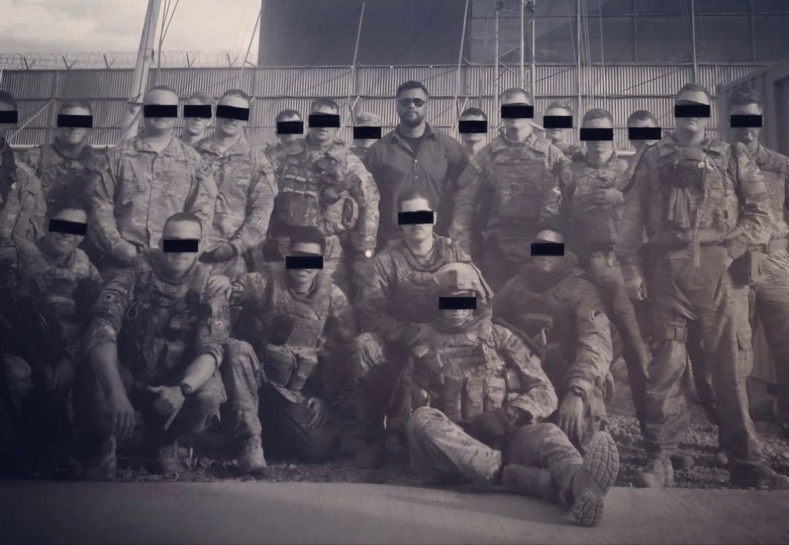
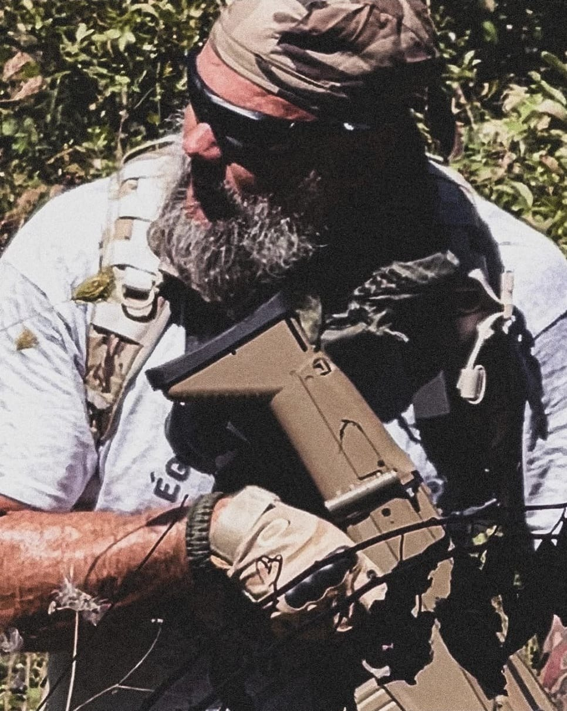
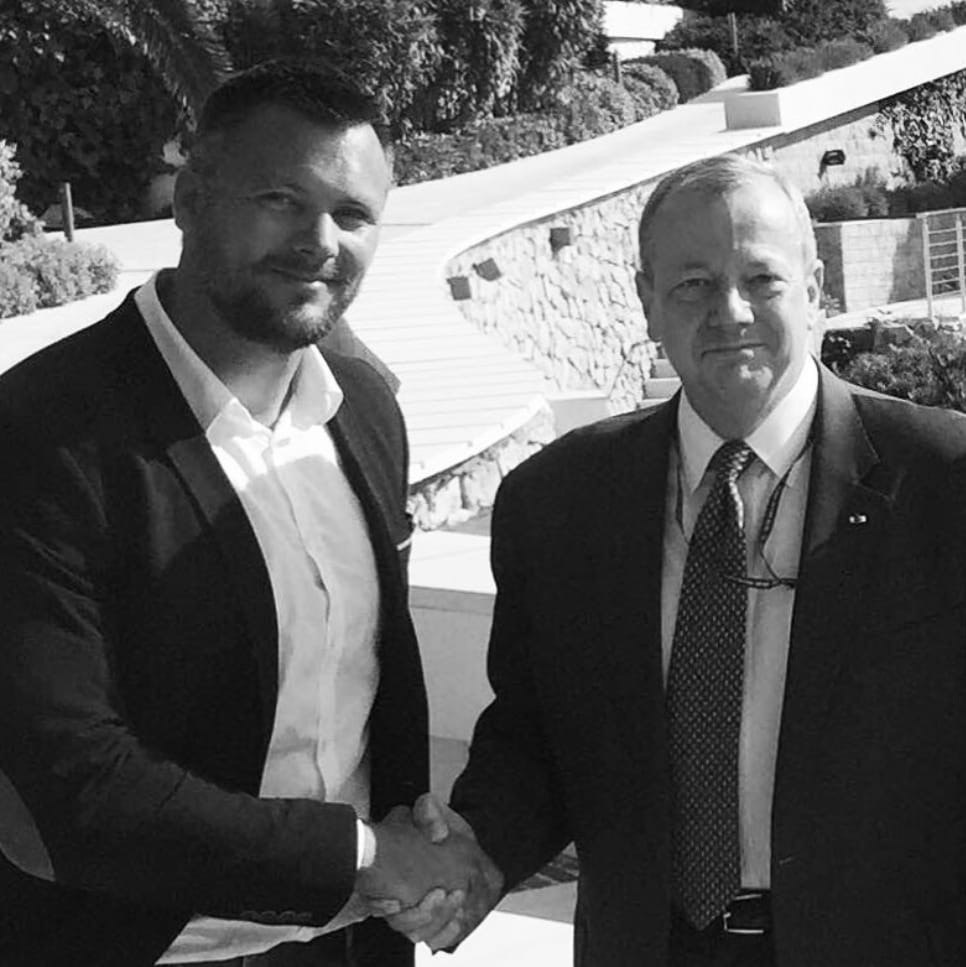

With over 28 years of field experience, his work spans Afghanistan, Ukraine, the Middle East, and Africa, with a particular focus on high-threat extractions, humanitarian corridors, and strategic evacuation logistics.




Afghanistan Evacuations (2021–2022)
During the collapse of Afghanistan in 2021, Admir Barčić played a key operational role in large-scale evacuation missions in cooperation with international partners, including humanitarian and non-governmental organizations such as Mercury One and the Nazarene Fund.
These operations contributed to the evacuation of thousands of at-risk individuals, including women, children, government officials, judges, and military personnel.
Barčić was directly involved in the coordination of evacuation routes, aircraft logistics, and the establishment of regional transit hubs, including Montenegro, which served as a temporary relocation and processing point for evacuees.
Avaz – Afghan evacuations and regional operations
Radio Free Europe – Montenegro as a humanitarian evacuation hub
Slovenia National Media Coverage
During the Afghanistan crisis, Admir Barčić was featured as a field expert and operational source in Slovenian national media, providing real-time insights into the situation on the ground.
His reporting highlighted the security risks, collapse of institutional systems, and urgent evacuation needs during the Taliban takeover.
Refugee & Humanitarian Operations – Montenegro
As part of the Afghanistan evacuation efforts, Admir Barčić contributed to the development and execution of humanitarian relocation initiatives in Montenegro.
These efforts included planning and coordination of temporary accommodation, logistics, and processing systems for evacuees in cooperation with international partners.
Montenegro served as a strategic transit hub, enabling the safe relocation of evacuees onward to third countries.
Gulf Crisis Evacuation (2026)
In one of the most recent high-risk operations, Admir Barčić was involved in the evacuation of over 900 Slovenian citizens from an active conflict zone in the Gulf region.
This complex mission required rapid coordination under volatile security conditions and involved multi-layered cooperation with governmental and intelligence structures.
The operation was officially recognized by Slovenian state authorities and stands as one of the fastest and most efficient evacuation responses in the region.
Government of Slovenia – "Evacuation of citizens from the Middle East"
Ukraine & International Operations
Admir Barčić has also participated in evacuation and crisis response operations related to the conflict in Ukraine, operating within multinational frameworks involving both governmental and private-sector coordination.
His work in these environments focuses on secure extraction, risk mitigation, and operational planning in dynamic and hostile conditions.
Operational Recognition & Industry Standing
Through decades of work in high-risk environments, Admir Barčić has earned formal recognition and partnerships with governments, international organizations, and private sector leaders worldwide.